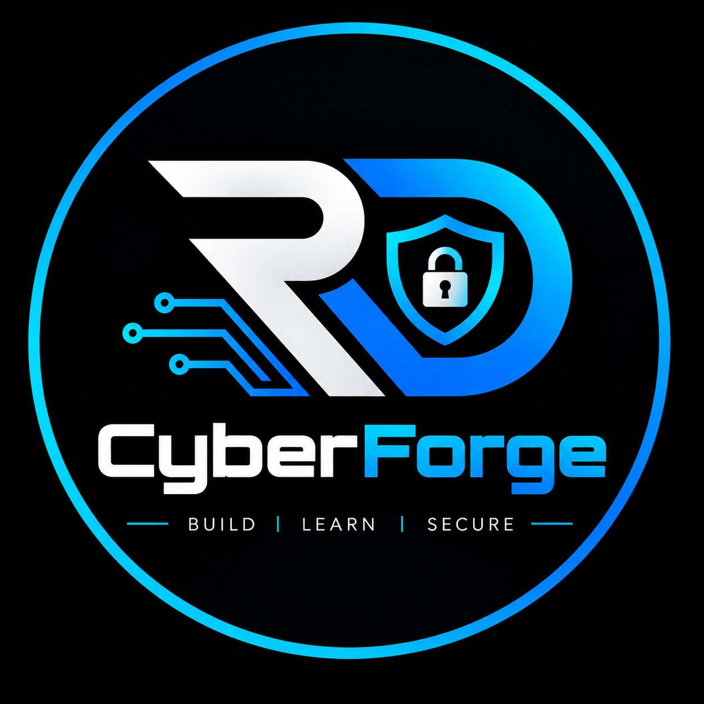

Ethical Hacking
Learning reconnaissance, enumeration, vulnerability discovery, and authorized penetration-testing methodologies.
HELLO, WORLD! I'M
I'm a cybersecurity student passionate about ethical hacking, network security, vulnerability assessment, and security operations. I learn by building labs, investigating security issues, and turning knowledge into practical skills.
ADD YOUR PROFILE PHOTO
// GET TO KNOW ME
A learner by mindset. A security enthusiast by passion. A builder by action.
I'm G. Devendra, a B.Tech student specializing in Cybersecurity. My journey is driven by curiosity about how systems work, how vulnerabilities occur, and how digital environments can be made more secure.
I believe cybersecurity is best learned through hands-on practice. I work with security tools, build virtual labs, perform authorized security assessments, and document my findings to strengthen my technical understanding.
Beyond learning, I founded RD CyberForge to help beginners explore cybersecurity through training sessions, workshops, CTFs, projects, and community learning.
My goal is to grow into a skilled cybersecurity professional while contributing to a safer digital world.
B.Tech — Cybersecurity
Undergraduate StudentEthical Hacking & Security Operations
Learning through practical labsIndia
Open to learning and collaborationRD CyberForge
Cybersecurity learning community// MY FOCUS AREAS
Areas I'm exploring and developing through hands-on practice.
Learning reconnaissance, enumeration, vulnerability discovery, and authorized penetration-testing methodologies.
Exploring network protocols, ports, traffic analysis, network scanning, and common security weaknesses.
Developing foundational skills in log analysis, security monitoring, alert investigation, and SIEM labs.
Assessing web applications in authorized environments and learning to identify and document security issues.
// MY TOOLKIT
Skills represent tools and areas explored through learning and practical exercises. Proficiency varies by technology.
// MY JOURNEY
Completed a structured internship involving cybersecurity learning, practical security tasks, research, and technical documentation.
Add your exact internship title, dates, responsibilities, tools, and verified achievements here before publishing.
Practising in learning environments, exploring security concepts, improving technical skills, and documenting lessons from completed rooms and exercises.
// SELECTED WORK
Hands-on security assessments, technical exploration, and practical cybersecurity learning in controlled environments.
Performed a controlled security assessment of the intentionally vulnerable Metasploitable 2 virtual machine. Explored network discovery, open-port analysis, service enumeration, vulnerability identification, and controlled exploitation to understand potential security risks.
Identify exposed services, analyze security weaknesses, evaluate risk severity, and document appropriate remediation.
Assessed a training web application through technology identification, reconnaissance, web security testing, and authentication-related test cases. Investigated potential weaknesses and documented observations for further analysis.
Examine application security, document validated findings, and recommend practical security improvements.
All testing should be performed only in authorized environments. Publish reports, screenshots, and technical findings only when you have permission to disclose them.
// PROGRESS OVER PERFECTION
Completed 30+ rooms and participated in Advent of Cyber 2025.
Built virtual labs to explore network, web, and monitoring security.
Strengthening networking, Linux, security tools, and reporting skills.
// BUILDING TOGETHER

Learn. Explore. Secure.
I founded RD CyberForge to make cybersecurity learning approachable for students and beginners. Our initiative focuses on training programs, hands-on workshops, CTFs, projects, and collaborative learning opportunities.
My responsibilities include developing learning content, coordinating sessions, supporting community activities, and helping build a welcoming environment for aspiring cybersecurity professionals.
Explore RD CyberForge ↗// WHERE I'M HEADED
Build practical SOC skills in monitoring, alert triage, and investigation.
Improve authorized penetration-testing and vulnerability assessment skills.
Explore incident investigation, digital evidence, and cybercrime analysis.
Help more students discover cybersecurity through RD CyberForge.
// LET'S CONNECT
I'm interested in cybersecurity internships, entry-level opportunities, learning collaborations, and meaningful projects. Feel free to connect with me.
devendra@portfolio:~$ whoami
Cybersecurity Student & Learner
devendra@portfolio:~$ mission
Learn. Build. Investigate. Secure.
devendra@portfolio:~$ status
Always learning _